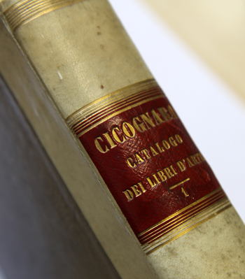
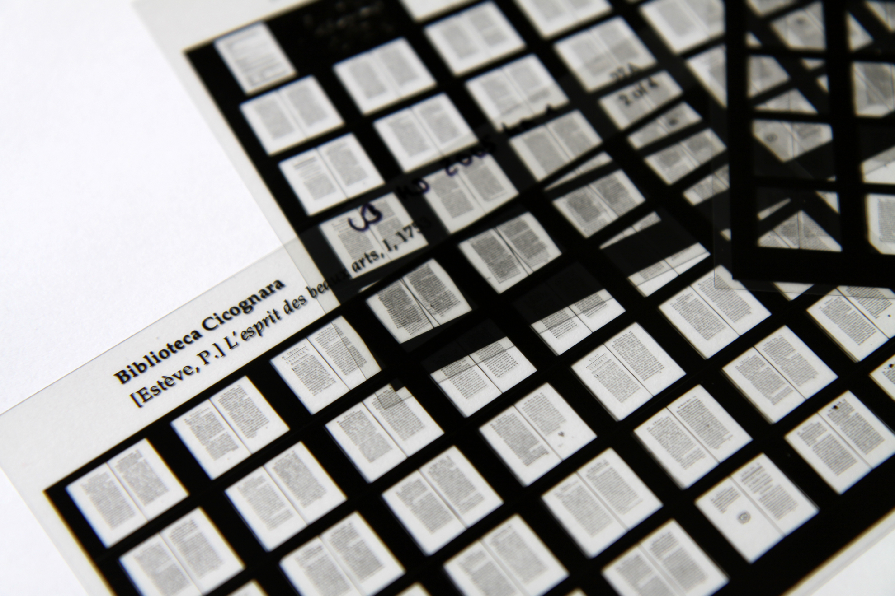
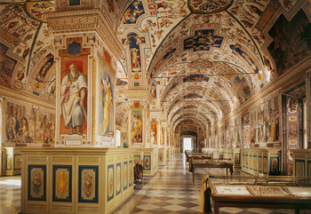

The Digital Cicognara Library An Open-Access Collection of the Early Literature of the Arts
What is The Digital Cicognara Library?

Courtesy Heidelberg University Library
The Digital Cicognara Library is an international initiative to recreate in digital form the remarkable private book collection of Count Leopoldo Cicognara (1767–1834). Though assembled in the Romantic era, Cicognara’s collection of some five thousand early imprints still comprises the foundational literature of art and archaeology. Cicognara’s famous, two-volume inventory of his library, the Catalogo ragionato dei libri d’arte e d’antichità, published in 1821 and often reprinted, remains an essential tool for scholars and bibliophiles.
When complete, the Digital Cicognara Library will consist of the text of the Catalogo ragionato itself, integrated with sophisticated digital editions of every title in the corpus, including black-and-white facsimiles of the original volumes in the Vatican; one or more high-resolution, color facsimiles of unique copies from partner libraries; thorough bibliographic information; links to the Catalogo ragionato; and searchable, full-text transcriptions of the books. Thanks to generous support from the Samuel H. Kress Foundation and partner institutions, the Digital Cicognara Library will be an open-access resource.
The Cicognara bibliographical corpus virtually defines the early literature of art. The collection includes treatises on art and architecture; artist and architect biographies; technical handbooks, manuals, and dictionaries of art, architecture, drawing, painting and sculpture; texts on the decorative arts; emblem books and iconographic handbooks; studies on costume, theatre and public spectacles; numismatic literature; works on aesthetics and the history and philosophy of art; topographical guides to collections and cultural sites; and early texts on the archaeology and antiquities of Greece and Rome. The texts are primarily in Italian, French, English, German, and Latin, and date from the fifteenth through the early nineteenth centuries.
In 1824, Cicognara sold his book collection to the Vatican Library where today it constitutes the Fondo Cicognara. For nearly two centuries, it has profoundly informed the work of art and architectural historians; scholars of ancient, Renaissance, and early modern history; students of the history of collecting, and the survival of antiquity; as well as bibliophiles and the rare book trade.

Courtesy Heidelberg University Library
We know of no modern library that replicates the Fondo Cicognara in its entirety. In order to expand access to the early literature of art, the Samuel H. Kress Foundation sponsored a project in the 1980s to disseminate the full text of the Cicognara Library in microfiche. Led by art historian Philipp Fehl (1920–2000) of the University of Illinois at Urbana-Champaign (UIUC), and working in close partnership with the Vatican Library and the firm of Chadwyck-Healey, this project produced a microfiche edition of every title in the Catalogo ragionato, totaling more than one million page images. The microfiche set has been sold or donated to dozens of libraries worldwide during the last thirty years, and metadata for each title is available in OCLC’s WorldCat, and remains available by subscription.
Why Create a Digital Cicognara Library?
Today, digital technologies have become the preferred mode for preserving and accessing early printed works. In 2014, with encouragement from the Kress Foundation, an international group of libraries began to explore ways of making the entire corpus of the Fondo Cicognara freely available online. The result will be the Digital Cicognara Library, a multi-year initiative launched in 2015.

Biblioteca Apostolica Vaticana, Vatican Museums. Courtesy Scala / Art Resource, NY
In addition to reproducing from the microform masters Cicognara’s own books in the Vatican, the Digital Cicognara Library will include a collection of variant copies of these early imprints—variants owned and digitized by partner libraries that correspond to the editions listed in the Catalogo ragionato. The copy-specific characteristics of the newly digitized volumes will provide new information about the early modern literature of art and its readership, Cicognara’s own reception and his wide-ranging impact on historical scholarship, and the development of research libraries.
The high-resolution scans created and hosted by holding institutions will be available for viewing through a distributed network of image servers using IIIF, the International Image Interoperability Framework. The bibliographic descriptions and the full-text transcriptions will be fully searchable from a centralized database as well as via relevant subject research portals, including and especially the Getty Research Portal. Together, the aggregated images and text offer a potentially transformative opportunity for the discipline of art history. By using new technology to make these key historical volumes more widely accessible, the Digital Cicognara Library will allow scholars to ask and answer new questions.
Charter Partners
The charter partners in The Digital Cicognara Library initiative include: Biblioteca Apostolica Vaticana, Columbia University Library, Frick Art Reference Library, Getty Research Institute, Harvard University Library, Heidelberg University Library, National Gallery of Art Library, Princeton University Library, and University of Illinois at Urbana-Champaign Library. The current partners, excluding the Vatican, collectively hold approximately fifty percent of the corpus of more than five thousand titles and are actively seeking new partners to complete the collection of matching editions.